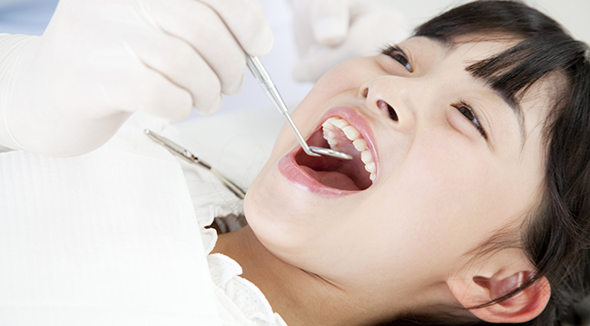
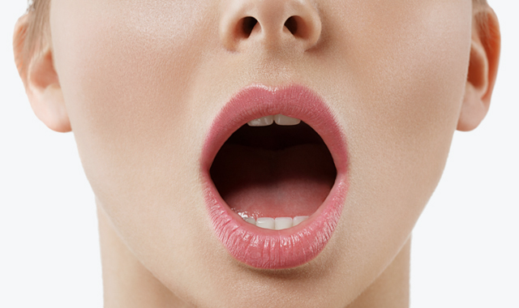
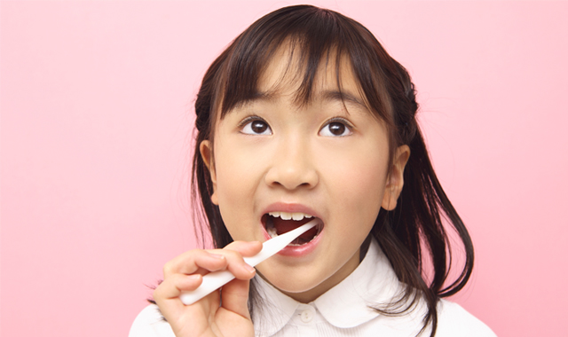
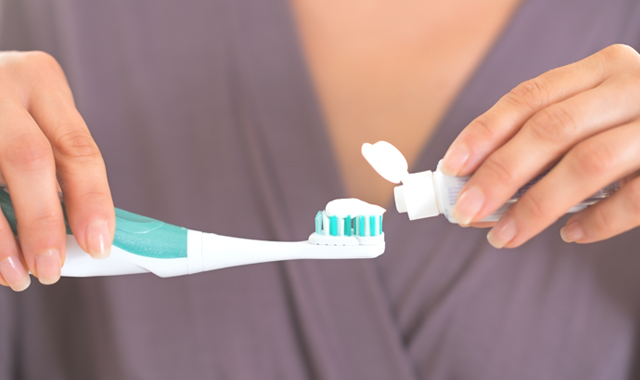
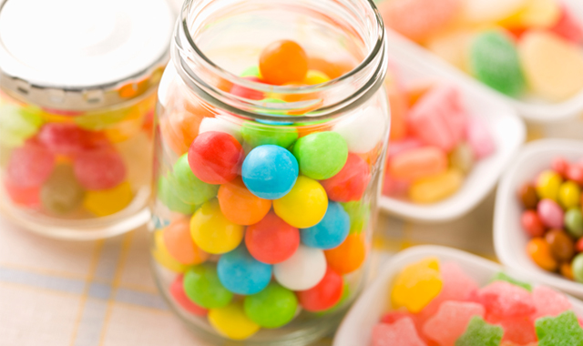
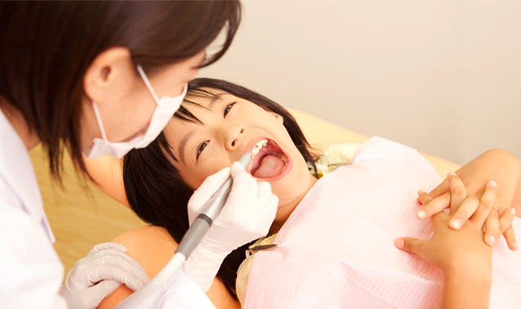
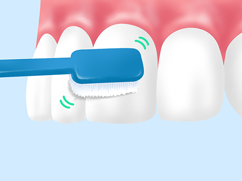
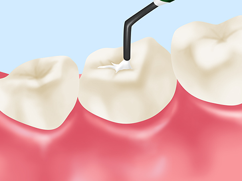
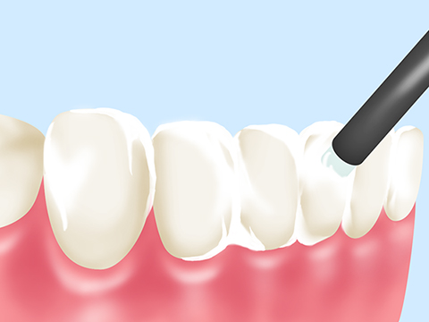
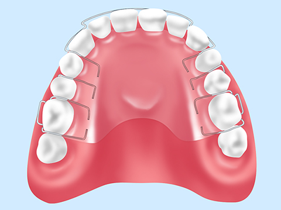

お子さんの歯の健康を守りましょう～小児歯科～

千歳船橋駅から徒歩3分の立地にある「中村歯科医院」では、お子さんのお口の健康を守るための取り組みを行っている歯医者です。「子どもの歯は生え替わるから大丈夫」とお考えでも、乳歯がむし歯になれば永久歯にも影響を及ぼすおそれがあります。お子さんの歯にとってよい習慣を身に付けさせるためにも、当院の小児歯科を受診ください。
お子さんの歯は親御さんと一緒に守る
将来的にむし歯になるかどうかは、子どものころの生活習慣が大きく影響します。適切なブラッシングやおやつの摂り方など、子どものころの習慣は大人になっても引き継がれるためです。お子さんのお口の環境を整えるための習慣付けには、親御さんが一緒に行うことが効果的です。
お子さんの歯を健康に保つためのポイント
定期的なお口のチェック

小学校2～3年になるまでは、最低でも週に1回はお子様のお口の中をチェックしましょう。お子さんは自分では口腔内の異変に気付きにくいため、親御さんが見つける必要があります。
ブラッシング指導

お子さんへのブラッシング指導をしましょう。一人で歯を磨けるようになるまでは、親御さんが仕上げ磨きをする必要があります。
フッ素を取り入れる

歯質を強くし、歯の再石灰化を促すフッ素入りの歯磨き粉を使うのも一つの方法です。ただし、うがいができないお子さんが飲み込んでしまう可能性があるため、うがいができるようになってから行ってください。
おやつの時間や内容をコントロール

おやつの与え方にも気を配りましょう。糖分が含まれたおやつばかりを与えると、むし歯になりやすい口腔内環境になってしまうため、親御さんがきちんとコントロールする必要があります。
タイミングを決める
お風呂から上がったら、食後30分後など、タイミングを決めてブラッシングの習慣を付ける訓練をします。
お子さんが歯科医院への通院をはじめるタイミングについて
お子さんの歯をむし歯にしないためには、乳歯が生え始めたタイミングで歯科医院を定期的に受診することをおすすめします。小さなころからむし歯予防に取り組むことで、永久歯がむし歯や歯周病にかかるリスクを下げられます。

そして、6歳ごろに永久歯の奥歯（6歳臼歯）が生えてきたタイミングの通院もおすすめです。6歳臼歯は溝が深く形状が複雑で、歯垢（プラーク）が溜まりやすくなっているため、シーラントなどの予防処置でむし歯から守りましょう。
当院の小児歯科メニュー
当院の小児歯科の治療内容をご紹介します。なるべくお子さんに不安や痛みを与えない治療を行い、歯科医院への苦手意識を軽減する取り組みをしています。治療の際にはお子さんが親御さんに甘えてしまうなど特別な場合を除き、親御さんもご同席いただけますので、ご希望の方はお申し付けください。また、治療を終えたお子さんにはご褒美のおもちゃをプレゼントしています。
ブラッシング指導

お子さんの歯並びに合わせたブラッシングを指導。磨き残しやすい箇所もお教えします。最後に必要な仕上げ磨きを親御さんにお教えしますので、ご家族でお子さんの口腔内環境を守りましょう。
シーラント

6歳くらいに生えてくる永久歯の奥歯（6歳臼歯）は、溝が深く汚れが溜まりやすい箇所。お子さんのむし歯予防対策として効果的なシーラントは、レジン（歯科用プラスチック）などの樹脂を用いて奥歯の溝を埋め、汚れが溜まりにくくする予防処置です。
フッ素塗布

むし歯菌への抵抗力を高め、歯の再石灰化を促し、初期むし歯を治すのにも効果的なフッ素を歯に塗布します。乳歯だけでなく、生えてきた永久歯をむし歯から守るのに効果的です。
過剰歯の抜歯

個人差がありますが、本来生えてくる歯よりも多く歯が生えてくるケースがあります。問題がなければ様子を観察し、歯並びに影響を及ぼす可能性があれば、抜歯することがあります。
床矯正

小学校低学年のお子さん向けの矯正治療です。
顎に装着するレジン製の床部分と、歯を広げるための金属ワイヤー付きの矯正装置を使用。時間をかけて顎の大きさを広げ、歯が自然な向きに生えるのを促します。1日14時間を目安に装着しますが、食事やブラッシングの際には取り外せるので、日常生活への負担を軽くできます。